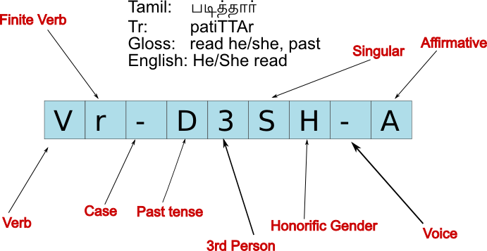

TamilTB.v0.1 by Institute of Formal and Applied Linguistics (UFAL) is licensed under a Creative Commons Attribution-NonCommercial-ShareAlike 3.0 Unported License. The webpages are maintained by Loganathan Ramasamy. Last modified: 8th May, 2011.
This
page will give a detailed description about how the data is annotated
at morphological layer (m-layer).
|  |
| Position |
Tag |
#Num of Positions |
|---|---|---|
| 1 2 3 4 5 6 7 8 9 |
POS Sub POS Case Tense Person Number Gender Voice Negation |
14 48 07 04 03 02 05 02 02 |
| Value | Description |
|---|---|
| A C D I J N P Q R T U V X Z |
Adverbs Conjunctions Determiners Interjections Adjectives Nouns Postpositions Quantifiers Pronouns Particles Numerals Verbs Unknown Punctuations |
| Value |
Description |
Examples |
|---|---|---|
| # |
Sentence boundary | The dot at the end of the sentences |
| : |
Comma | , |
| = |
Numbers using digits | 10, 15 etc. |
| b |
Comparative particle | காட்டிலும்/kAttilum/'than', விட/vita/'than' |
| c |
Connective particle | உம்/um/'also, and' |
| d |
Adjectival particle | ஓடுகிற/OtukiRa/'which is running' , ஓடிய/Otiya/'which ran', ஓடும்/'which will run' |
| e |
Interrogative particle | ஆ/A |
| f |
Civility particle | உம்/um/'may please' :
வரவும்/varavum/'may you please come' |
| g |
Particles, general | ஆக/Aka, ஆன/Ana |
| h |
Reflexive pronouns | தான்/TAn |
| i |
Interrogative pronouns | யார்/yAr/'who', எவன்/evan/'who he', எது/eTu/'which', என்ன/enna/'what' |
| j |
Lexical, Imperative verb | ஓடு/Otu/'run', உதவு/uTavu/'help' |
| k |
Intensifier particle | ஏ/E/'very, indeed, itself' |
| l |
Particle 'ஆவது/AvaTu' | ஆவது/AvaTu/'at least' |
| m |
Particle 'மட்டும்/mattum' | மட்டும்/mattum/'only' |
| n |
Complementizing nouns | படி, மாதிரி/pati, mATiri/'manner, way', போது/pOTu/'when' |
| o |
Particle of doubt or indefiniteness | ஓ/O |
| p |
Personal pronouns | நான்/wAn/'I', நீ/wI/'you', அவன்/avan/'he,remote' |
| q |
Emphatic particle | ஏ/E, தான்/tAn - ex:
என்னையே/ennaiyE/'just me', ராமன்தான்/rAmanTAn/'It was ram ...' |
| r |
Lexical, finite verb | ஓடுகிறான்/OtukiRAn/'he is running', உதவுகிறாள்/uTavukiRAL/'she helps' |
| s |
Concessive particle | உம்/um/ - ex: ஓடியும்/Otiyum/'although ran', உதவினாலும்/uTavinAlum/'evenif helps...' |
| t |
Lexical, verbal particle | வந்து/vawTu/'having come', ஓடி/Oti/'having run', உதவி/uTavi/'having helped' |
| u |
Lexical, infinitive | வர/vara/'to come', ஓட/Ota/'to run', உதவ/uTava/'to help' |
| v |
Inclusive particle | உம்/um/'also' , for ex: ராமனும்/rAmanum/'also rAman' |
| w |
Lexical, conditional | வந்தால்/vawTAl/'if come', ஓடினால்/OtinAl/'if ran', உதவினால்/uTavinAl/'if helped' |
| x |
Cardinals | ஒன்று/onRu/'one', இரண்டு/iraNtu/'two' |
| y |
Ordinals | ஒன்றாம்/onRAm/'first', இரண்டாம்/iraNtAm/'second', மூன்றாம்/mUnRam/'third' |
| z |
Lexical, verbal nouns | வந்தது/vawTaTu/'the thing which came', ஓடியது/OtiyaTu/'the thing which ran' |
| A |
Adverbs, general | விரைவாக/viraivAka/'quickly', அடிக்கடி/atikkati/'frequently' |
| B |
General referential pronouns | யாரும்/yArum/'anyone', எவனும்/evanum/'anyone, he', எதுவும்/eTuvum/'anything' |
| C |
Coordinating conjunctions, general | மற்றும்/maRRum/'and', அல்லது/allaTu/'or' |
| D |
Determiners, general | அந்த/awTa/'that', இந்த/iwTa/'this', எந்த/ewTa/'which' |
| E |
Proper names | கௌதமா/kauTamA/'Gautama', பிராக்/pirAk/'Prague' |
| F |
Specific indefinite referential pronouns | யாரோ/yArO/'someone', எவனோ/evanO/'someone, he', எதுவோ/eTuvO/'something' |
| G |
Non specific indefinite pronouns | யாராவது/yArAvaTu/'someone, atleast', எவனாவது/evanAvaTu/'someone,he, atleast', எதாவது/eTAvaTu/'something, atleast' |
| I |
Interjections, general | ஆஹா/AhA/'aha' |
| J |
Adjectives, general | அழகான/azakAna/'beautiful', நல்ல/walla/'good' |
| N |
Nouns, general | நாற்காலி/wARkAli/'chair', பேருந்து/pEruwTu/'bus' |
| O |
Oblique nouns | மர/mara/'wooden', புத்தக/puTTaka/'of book' |
| P |
Participial nouns | ஓடியவள்/OtiyavaL/'she who ran',
உதவியவர்/uTaviyavar/'he-she who helped' |
| Q |
Quantifiers, general | கொஞ்சம்/konjcam/'a bit' |
| R |
Auxiliary, finite verb | கொண்டிருக்கிறார்/koNtirukkiRAr/'he-she
has been doing' |
| S |
Immediacy particle | வந்ததும்/vawTaTum/'as soon as
came', ஓடியதும்/OtiyaTum/'as soon as ran' |
| T |
Auxiliary, verbal participle | கொண்டு/koNtu |
| U |
Auxiliary, infinitive | பட/pata: passive infinitive |
| W |
Auxiliary, conditional | பட்டால்/pattAl: passive
conditional |
| X |
Unknown | |
| Z |
Auxiliary, verbal nouns | பட்டது/pattaTu: passive verbal
noun (neuter) |
| Value |
Description |
|---|---|
| A |
Accusative |
| D |
Dative |
| I |
Instrumental |
| G |
Genitive |
| L |
Locative |
| N |
Nominative |
| S |
Sociative |
| Value |
Description |
Example |
Tag |
|---|---|---|---|
| D |
Past |
தெரிவித்தார்/TeriviTTAr/'informed,
he' |
Vr-D3SHAA |
| F |
Future |
உதவும்/uTavum/'it will help' |
Vr-F3SNAA |
| P |
Present |
செல்கிறார்/celkiRAr/'he is going' |
Vr-P3SHAA |
| T |
Tenseless |
இல்லை/illai/'neg auxiliary' |
Vr-T3PNAA |
| Value |
Description |
Example |
Tag |
|---|---|---|---|
| 1 |
1st person |
மேற்கொண்டேன்/mERkoNtEn/'undertook,I' |
Vr-D1SAAA |
| 2 |
2nd person |
நீங்கள்/wIngkaL/'you,polite' |
RpN-2SH-- |
| 3 |
3rd person |
கட்டினார்/kattinAr/'he built' |
Vr-D3SHAA |
| X |
Person not marked |
not used so far |
not used so far |
| Value |
Description | Example |
Tag |
|---|---|---|---|
| S |
Singular | இந்தியா/iwTiyA/'India' |
NEN-3SN-- |
| P |
Plural | நாடுகள்/wAtukaL/'countries' |
NNN-3PN-- |
| X |
Number not marked | not used so far |
not used so far |
| Value |
Description | Example |
Tag |
|---|---|---|---|
| F |
Feminine | வருவாள்/varuvAL/'she will come' |
Vr-F3SFAA |
| M |
Masculine | ஆடவனின்/Atavanin/"adult's(he)" |
NNN-3SM-- |
| N |
Neuter | எடுத்தது/etuTTaTu/'took it' |
Vr-D3SNAA |
| H |
Honorific (both F & M) | அவர்/avar/'he or she, polite' |
RpN-3SH-- |
| A |
Anitmate (humans) | யார்/yAr/'who' |
RiN-3SA-- |
| I |
Inanimate (non humans) | not used so far |
not used so far |
| X |
Gender not marked | not used so far |
not used so far |
| Value |
Description | Example |
Tag |
|---|---|---|---|
| A |
Active | எடுத்தது/etuTTaTu/'took it' | Vr-D3SNAA |
| P |
Passive | படுகிறது/patukiRaTu/'being....[past participle]' |
VR-P3SNPA |
| Value |
Description | Example |
Tag |
|---|---|---|---|
| A |
Affirmative | பின்பற்ற/pinpaRRa/'to follow' |
Vu-T---AA |
| N |
Negated | முடியாது/mutiyATu/'cannot' |
VR-T3SN-N |